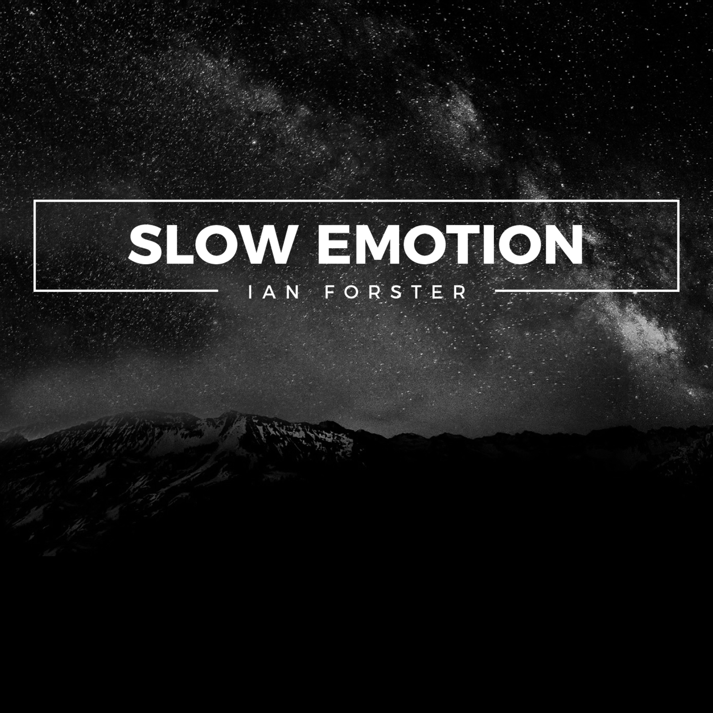

X
About
Singer/Songwriter Ian Forster seeks to write soulful, honest music about life and its meaning, love and its journey, and God in His glory. He found his passion for writing music when he was 16 and seeks to glorify Christ throughout the entire process.
X
Music
Ian Forster's first studio recorded EP, Slow Emotion, includes five original songs that captivate the sound of heart and emotion.
X
Booking
Ian Forster provides a welcoming atmosphere of comforting music and worship. If you are interested in booking him for a show, please use the contact link below.
Contact/Booking